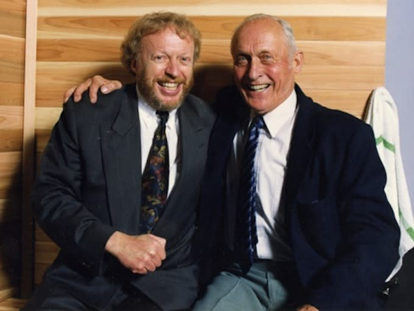
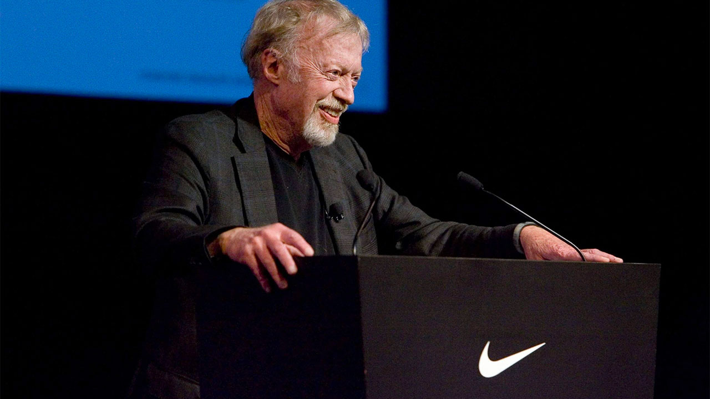

Nike a été créée en 1964 sous le nom de Blue Ribbon Sports par Phil Knight, un ancien athlète américain et visionnaire marketing, et Bill Bowerman, entraîneur d’athlétisme à l’Université de l’Oregon et inventeur passionné de chaussures de course innovantes ; la société a été rebaptisée Nike, Inc. en 1971, adoptant le célèbre logo Swoosh, lançant des modèles emblématiques comme la Waffle Trainer, et devenant rapidement une des marques de sport les plus reconnues et influentes au monde grâce à son mélange unique d’innovation, de performance et de stratégie commerciale.

Phil Knight était un ancien coureur américain et diplômé de Stanford qui a cofondé Nike en 1964, et grâce à sa vision commerciale audacieuse, son sens du marketing, sa capacité à prendre des risques et sa stratégie d’expansion internationale, il a transformé une petite entreprise de distribution de chaussures japonaises en un empire mondial du sport, influençant profondément l’industrie grâce à des campagnes publicitaires révolutionnaires, des partenariats avec des athlètes emblématiques et une culture d’innovation qui a fait de Nike l’une des marques les plus puissantes et reconnues au monde.
Bill Bowerman était un entraîneur d’athlétisme américain légendaire à l’Université de l’Oregon, connu pour son obsession du détail et son engagement envers la performance, qui a cofondé Nike en 1964 ; grâce à son esprit d’innovation, ses expérimentations techniques notamment la création de la célèbre semelle “waffle” et sa volonté constante d’améliorer les chaussures de ses athlètes, il a profondément influencé la conception moderne des chaussures de course et contribué à bâtir les fondations techniques et sportives qui ont permis à Nike de devenir l’une des marques les plus innovantes et respectées du monde.